"6월에는 한 달짜리 전시가 유난히 몰린다. 같은 주말에 한쪽은 닫히고 한쪽은 막 시작한다. 둘째 주말이 가장 분주하다."
매달 그렇지만, 이번 달은 좀 더 그렇다. 5년 만에 돌아온 서울사진축제가 마지막 두 주를 남겨 두고 있고, 그 옆으로 한 달짜리 단·중기 단체전이 줄을 지어 시작과 끝을 맞추고 있다. 동선 한 번이 한 달을 가른다. 한 달 안에 끝나는 것부터 정리한다.
한 달 안에 닫히는 여섯 장면
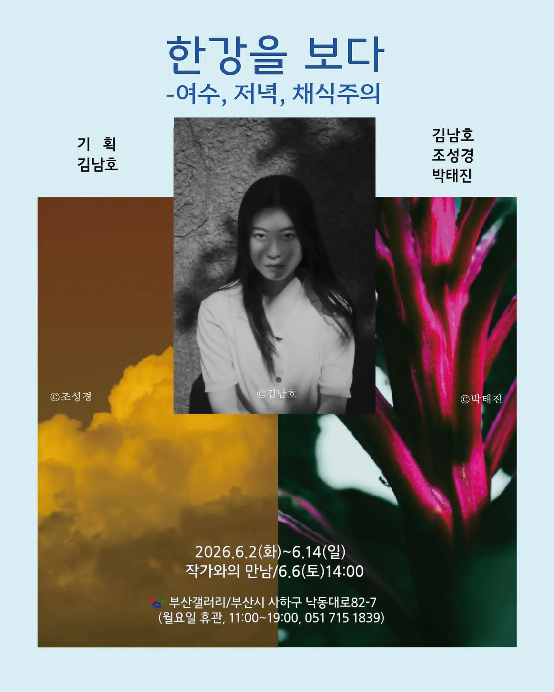
김남호·조성경·박태진, 〈한강을 보다 — 여수, 저녁, 채식주의〉
부산갤러리. 6.2 – 6.14. 작가와의 만남 6.6 토 14:00.
한강의 문학을 사진으로 다시 읽는 단체전. 김남호가 단편 〈여수의 사랑〉을 50점의 흑백 사진으로, 박태진이 〈채식주의자〉의 영혜를 강렬한 컬러로, 조성경이 시집 〈서랍에 저녁을 넣어두었다〉를 붉은 노을과 저녁의 이미지로 옮겼다. 기획은 김남호.
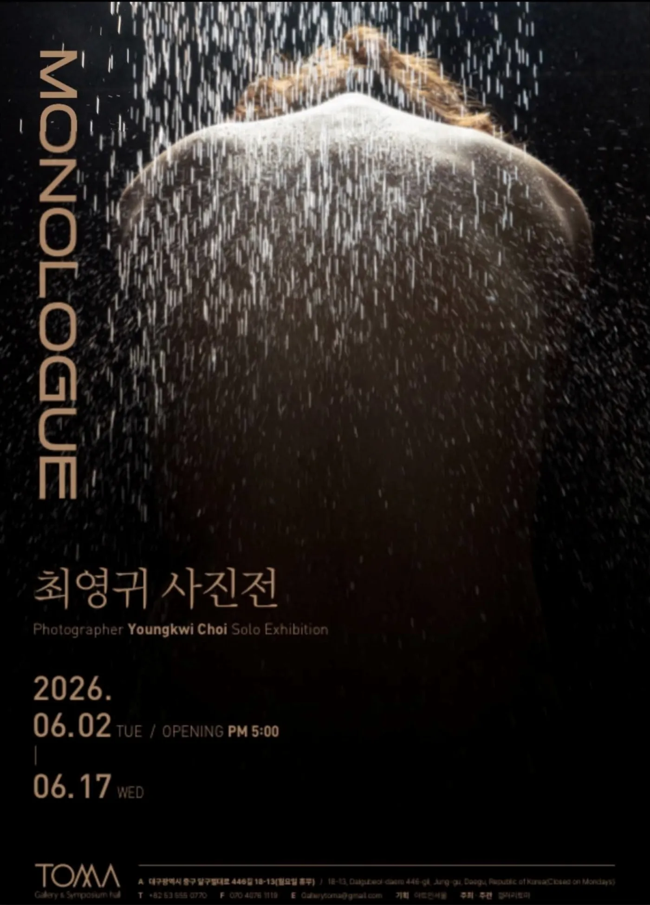
최영귀 Youngkwi Choi, 〈MONOLOGUE〉
갤러리토마 (대구). 6.2 – 6.17. 오프닝 6.2 PM 5:00.
혼잣말의 톤. 비를 맞는 한 사람의 등이 메인 이미지. 단독전.
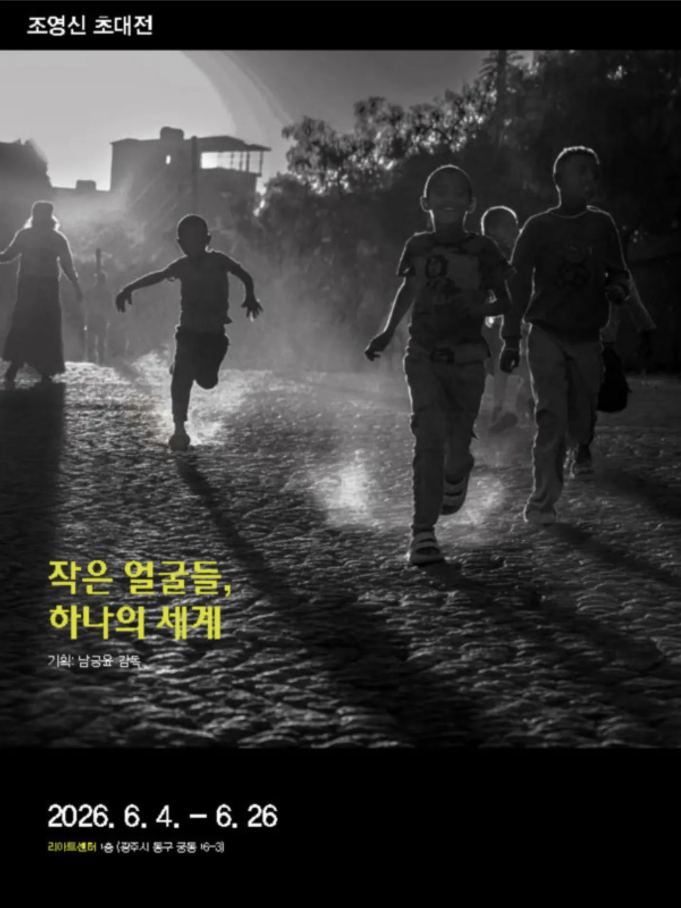
조영신 초대전, 〈작은 얼굴들, 하나의 세계〉
리아트센터 1층 (광주시 동구 궁동 16-3). 6.4 – 6.26.
작은 단위의 얼굴들. 모이면 하나의 풍경이 되고, 흩어 보면 각자의 세계가 된다. 기획 남궁요 감독.
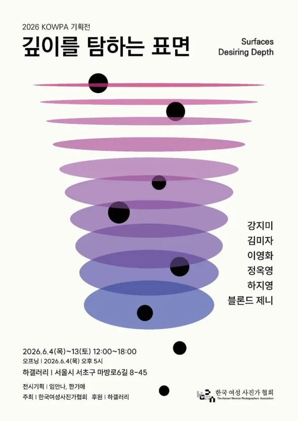
2026 KOWPA 기획전 〈깊이를 탐하는 표면 Surfaces Desiring Depth〉
참여: 강지미·김미자·이영화·정옥영·하지영·블론드 제니. 기획: 임안나·한기애. 주최: 한국여성사진가협회 (KOWPA).
하갤러리 (서울시 서초구 마방로6길 8-45). 6.4 – 6.13. 12:00 – 18:00. 오프닝 6.4 PM 5:00.
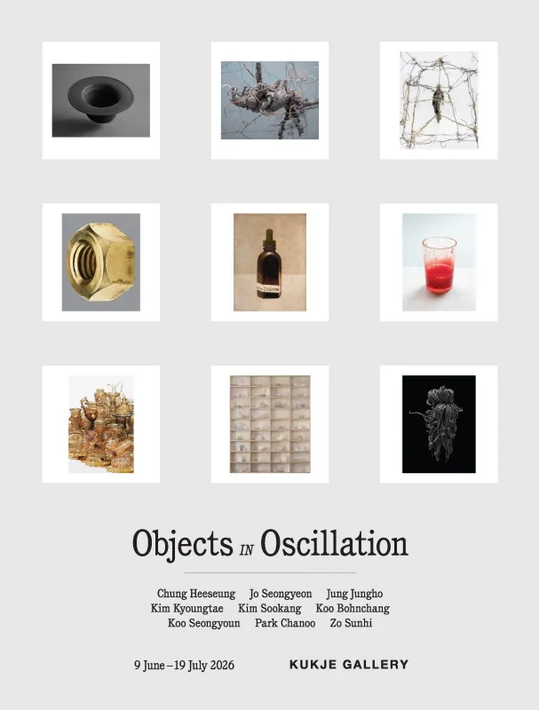
〈진동하는 사물들 Objects in Oscillation〉
참여: 구본창·구성연·김경태·김수강·박찬우·정정호·정희승·조선희·조성연.
국제갤러리. 6.9 – 7.19.
사물을 정물의 형식이 아니라 진동의 상태로 본다. 구본창이 오래 다뤄 온 사물의 결을 동시대 사진가 아홉 명이 함께 잇는 자리. 한 달 안에 닫히지는 않지만, 6월 흐름의 한가운데 놓이는 단체전이라 같은 묶음에 두었다.
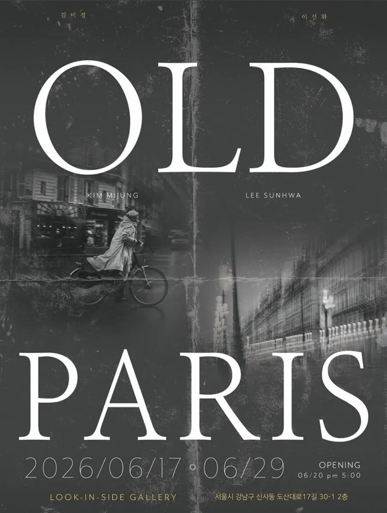
김미정·이선화, 〈OLD PARIS〉
룩인사이드 갤러리 (서울시 강남구 신사동 도산대로17길 30-1 2층). 6.17 – 6.29. 오프닝 6.20 PM 5:00.
파리를 다시 보는 두 작가의 짝. 옛 도시의 표정이 어떤 톤으로 옮겨졌는가.
공공기획 · 축제
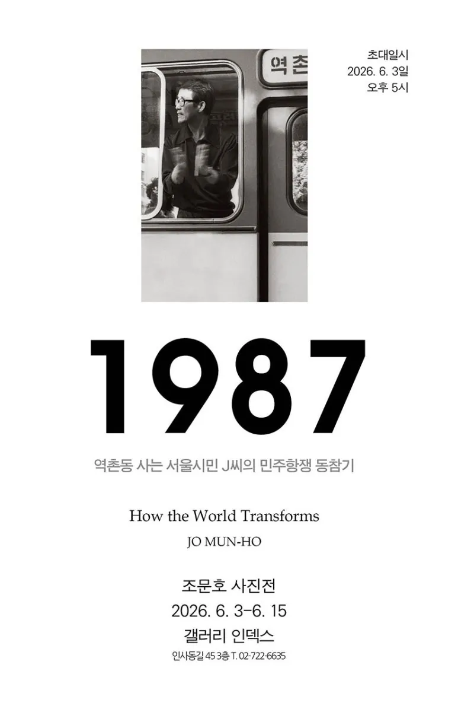
조문호 사진전, 〈1987 — 역촌동 사는 서울시민 J씨의 민주항쟁 동참기 / How the World Transforms〉
갤러리 인덱스 (인사동길 45 3층). 6.3 – 6.15. 초대일시 6.3 PM 5:00.
조문호가 1987년 6월의 한 사람을 따라가며 찍은 기록. 한 시민의 시점에서 다시 보는 그 해 6월.
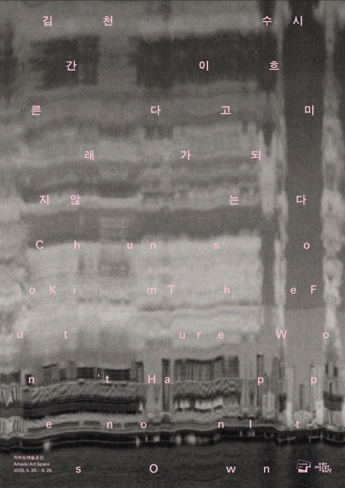
김천수 Chunsoo Kim, 〈시간이 흐른다고 미래가 되지 않는다 / The Future Won't Happen on Its Own〉
아마도예술공간 Amado Art Space. 5.29 – 6.28.
시간의 흐름과 미래 사이의 어긋남. 흐른다고 도착하는 것은 아니다.
서울사진축제 〈컴백홈〉은 글머리에 따로 두었다 (서울시립 사진미술관, 4.9 – 6.14). 5년 만에 돌아온 축제. 집을 단순한 거주 공간이 아니라 기억·관계·감정이 쌓인 자리로 본다. 23명의 작가가 '집을 이루는 것', '이동하는 집', '길 위에서', '우리의 집' 네 섹션으로 묶인다. 6월 둘째 주말 (6.14) 이 마지막이다.
여름까지 가는 다섯 장면
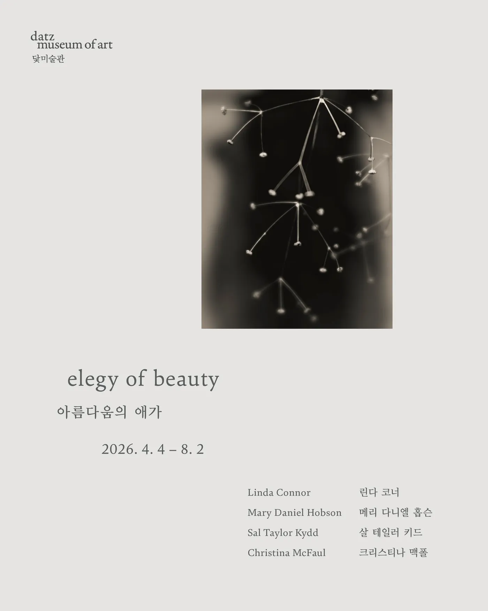
〈elegy of beauty 아름다움의 애가〉
참여: Linda Connor (린다 코너) · Mary Daniel Hobson (메리 다니엘 홉슨) · Sal Taylor Kydd (살 테일러 키드) · Christina McFaul (크리스티나 맥폴).
닻미술관 (datz museum of art). 4.4 – 8.2.
네 사진가가 '아름다움이란 무엇인가' 라는 질문을 각자의 시선으로 들고 온다.
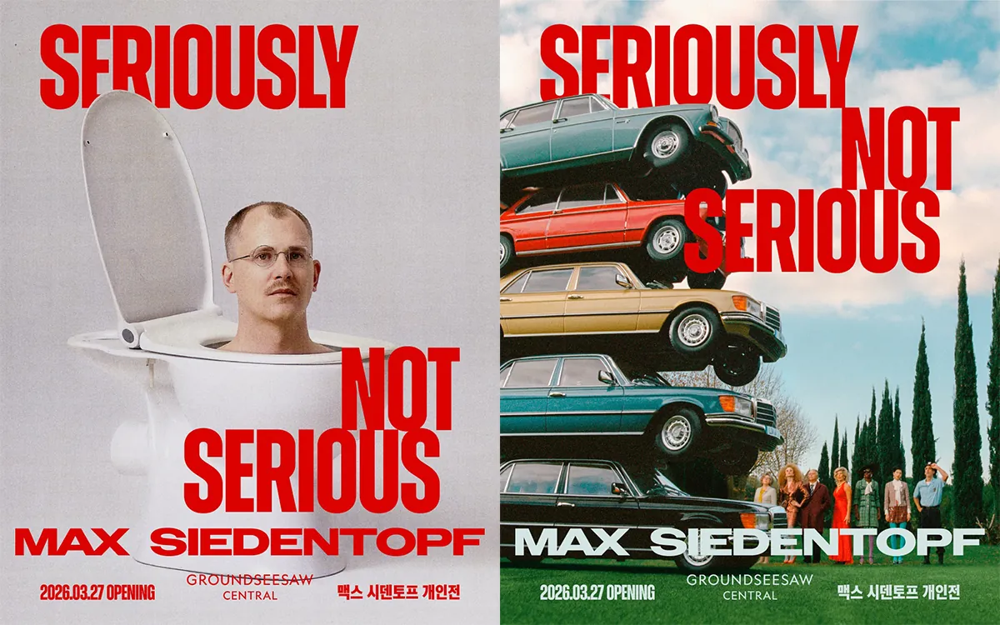
맥스 시덴토프 Max Siedentopf, 〈SERIOUSLY NOT SERIOUS〉
그라운드시소 센트럴. 3.27 – 8.30.
네덜란드 출신 작가의 아시아 첫 대형 개인전. 사진·비디오·조각·설치를 가로지르며 유머의 외피로 현실의 본질을 다시 본다.
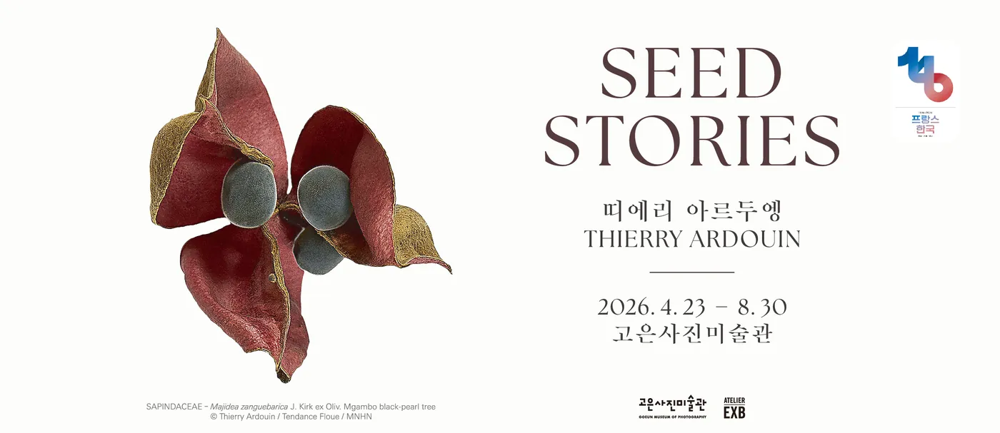
띠에리 아르두엥 Thierry Ardouin, 〈SEED STORIES〉
고은사진미술관 (부산). 4.23 – 8.30. 한불 수교 140주년 기념전.
주사 전자 현미경으로 확대한 세계 각지의 씨앗 이미지가 농업·제도·인간의 욕망을 가로지른다.
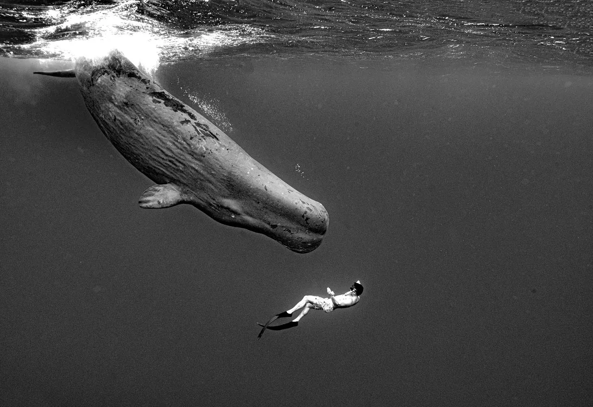
장남원, 〈움직이는 섬, 고래 Moving Island, Whale〉
경주 솔거미술관. 5.11 – 9.13.
1992년부터 30여 년간 고래를 따라간 한국 유일의 고래 사진가. 평생의 기록을 모은다. 80년대 접사 중심이던 국내 수중 사진계에 광각 렌즈를 들고 들어왔던 작가.
"이번 달은 둘째 주말이 가장 분주하다. 6월 13일에 〈깊이를 탐하는 표면〉이 가장 먼저 닫히고, 다음 날 14일에 〈한강을 보다〉·〈컴백홈〉이, 15일에는 〈1987 역촌동〉이 잇따라 마감된다. 셋째 주말에 〈OLD PARIS〉가 시작하고 〈MONOLOGUE〉가 정리된다."
정리
- 이번 주말 (6.6 – 6.7) 토요일 오후에 〈한강을 보다〉 작가와의 만남 (부산갤러리, 6.6 14:00).
- 둘째 주말 (6.13 – 6.14) 가장 분주한 주말. 〈깊이를 탐하는 표면〉(하갤러리, 6.13), 〈한강을 보다〉(부산갤러리, 6.14), 〈컴백홈〉(서울사진축제, 6.14), 〈1987 역촌동〉(갤러리 인덱스, 6.15) 가 잇따라 닫힌다.
- 셋째 주말 (6.20 – 6.21) 〈OLD PARIS〉가 6.20 오프닝. 〈MONOLOGUE〉는 6.17 마감.
- 넷째 주말 (6.27 – 6.28) 〈작은 얼굴들〉(6.26)·〈OLD PARIS〉(6.29)·〈시간이 흐른다고〉(6.28) 가 한 주에 정리된다.
- 여름까지 〈elegy of beauty〉(닻미술관, 8.2), 〈SERIOUSLY NOT SERIOUS〉(그라운드시소 센트럴, 8.30), 〈SEED STORIES〉(고은사진미술관, 8.30), 〈움직이는 섬, 고래〉(경주 솔거미술관, 9.13), 그리고 〈진동하는 사물들〉(국제갤러리, 7.19) 은 7월·8월에도 다시 기회가 있다.
목록의 출처는 인스타그램 @sajinyesul_photoart 와 @soonjeong.class 의 6월 큐레이션. 각 갤러리의 운영 시간과 휴관일은 사전 확인이 필요하다. 정보 변경이 확인되면 본 글에 보강할 예정이다.